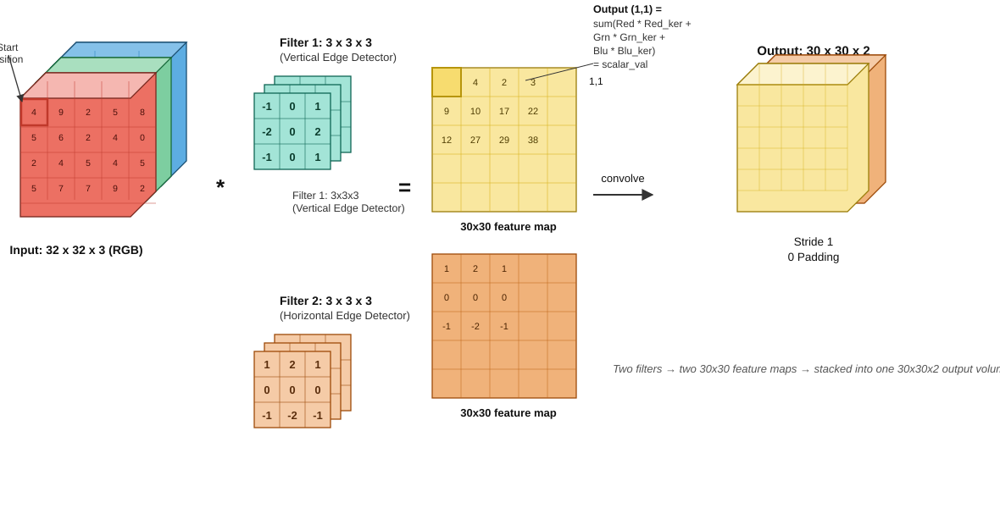
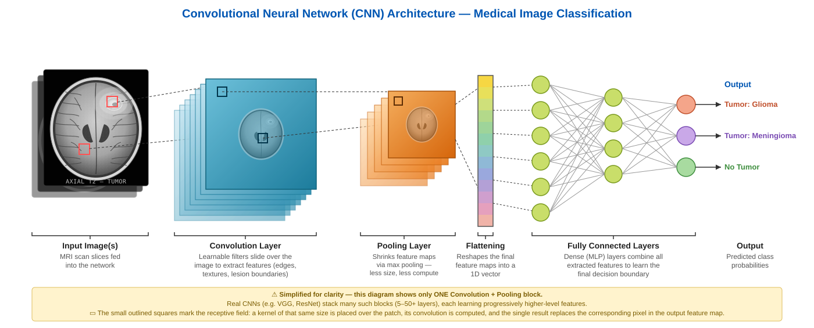
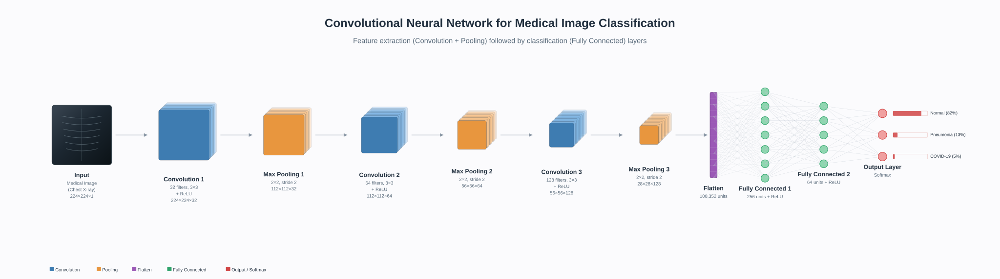
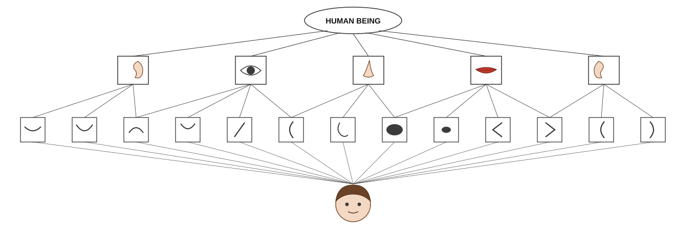

The MLP is the foundation we covered in the previous section. A Convolutional Neural Network (CNN) is yet another kind of Neural Network, where layer processing is a mathematical operation called convolution. The basic idea is to divide the input into overlapping 2D image patches and to compare each patch with a set of small weight matrices, or filters, which represent parts of an object; this is shown below. We can think of this as a form of template matching.
Why MLPs Struggle with Visual Data
The primary failure of the Multi-Layer Perceptron (MLP) in image processing is its lack of Spatial Topology. When an image is flattened into a 1D vector to fit an MLP's input layer, the physical proximity between pixels is destroyed; a pixel's neighbor to the right or bottom is suddenly shifted thousands of indices away. This forces the MLP to learn the relationship between every single pixel globally, leading to a Parameter Explosion. For instance, a high-definition image would require billions of weights for just one hidden layer, exceeding the memory capacity of most hardware. Furthermore, MLPs lack Translation Invariance; if the network learns to recognize a feature in the top-left, it will not recognize that same feature in the bottom-right because the weights are tied to specific, static pixel coordinates. Finally, as you noted, the Fixed-Input Constraint is a major hurdle: MLPs require a hard-coded number of input neurons, making them incapable of processing variable image sizes without destructive resizing.
Visualizing the "Flattening" Failure
2D Image (Spatial)
1
2
3
4
5
6
Pixels 1, 2, and 4 are neighbors.
→
1D Flattened (Vector)
1
2
3
4
5
6
Topology Broken: Pixel 4 is no longer "near" Pixel 1.
A Different Kind of Learning Problem: End-to-End vs. Two-Stage
Every classifier covered earlier in this series — Decision Trees/CART, Naive Bayes, SVM, K-NN, Logistic Regression — was trained on features you (or a fixed transform) had already decided on. That pipeline has two disconnected stages: first, a human designs or hand-extracts the features; then, and only then, a separate learning algorithm fits parameters — tree splits, class-conditional probabilities, support-vector weights, distance metrics — on top of those fixed, already-decided features. For images specifically, this hand-engineering stage has well-known names: SIFT (keypoint gradient-orientation descriptors, built to survive scale/rotation changes), HOG (gradient-orientation histograms over image cells, classically paired with an SVM for pedestrian detection), and Haar-like features (the rectangular intensity-difference features behind the original Viola-Jones face detector) — all designed by researchers, with no learned component. The feature-extraction stage in every one of these is not learned at all; it is designed once, by a person, before training even starts.
A CNN collapses this into a single learned stage. The convolutional filters you're about to see are the feature extractor — but unlike a hand-designed edge detector, their weights are trainable parameters. They start out as small random numbers (He initialization, Section 1 below), and the exact same backpropagation/Adam loop that updates the final classification layer also updates every filter weight in every convolutional layer. So by the time training finishes, "features" and "classifier parameters" are no longer two separately-produced artifacts — they're all just entries in one parameter vector, optimized jointly against one loss. Nobody decided in advance that the network should look for vertical edges, ovals, or ear-shaped curves; the network discovered that those particular patterns were useful, purely because they helped reduce the classification error.
Keep this in mind as you read the sections below: whenever you see a filter's weights, a feature map, or a "detector," ask whether it was designed or learned. In a CNN, past the raw pixels, the answer is always the latter.
Convolutional Neural Networks Algorithm
To overcome the parameter explosion and loss of topology in MLPs, we shift our focus from global connectivity to local feature detection. This is achieved through Weight Sharing.
When dealing with image data, we can apply the same weight matrix to each local patch of the image in order to reduce the number of parameters. If we "slide" this weight matrix over the image and add up the results, we get a technique known as convolution; in this case the weight matrix is often called a "kernel" or "filter."
More precisely, let $X \in \mathbb{R}^{H \times W}$ be the input image, and $W \in \mathbb{R}^{h \times w}$ be the kernel. The output is denoted by $Z = X \circledast W$, where (ignoring boundary conditions) we have the following mathematical definition:
Essentially, we compare a local patch of $X$, of size $h \times w$ and centered at $(i,j)$, to the filter $W$. The output $Z_{i,j}$ measures the similarity between the input patch and the filter's learned pattern.
While the convolution formula above defines the mathematical "how," the motivation lies in capturing Spatial Local Correlations. In an MLP, every neuron is connected to every pixel, which is computationally expensive and ignores the fact that pixels are only meaningful in relation to their immediate neighbors. By using local kernels, we ensure the network focuses on these relationships first, drastically reducing parameters while granting the model Translation Invariance-the ability to recognize a pattern regardless of where it appears in the frame.
Building on this mathematical foundation, a Convolutional Neural Network (CNN) is a deep learning architecture designed to automatically and adaptively learn spatial hierarchies of features. It sequences multiple layers of convolution and specialized operations to transform raw pixel data into sophisticated, high-level semantic representations. The next section zooms into the single most important of those operations - the multi-channel convolution that a filter performs at every layer - before Figure 2 pulls back out to show how many such layers, plus pooling, are chained end-to-end to turn raw pixels into a probability.
Convolution layers
CNN involves several convolutions before the raw pixels becomes a probability, as the full pipeline in Figure 2 below shows. Convolution in these layers are multi-filter and multi-channel operations.
The Multi-Filter, Multi-Channel Operation
A standard CNN is composed of many layers stacked sequentially. Within each layer, we don't apply just one filter; we apply a bank of several filters (e.g., 32, 64, or 128) simultaneously.
Several filters?
Each filter acts as a specialized feature detector. Because a single filter can only learn to recognize one specific pattern-such as a vertical edge or a specific color gradient-a single-filter layer would be "blind" to all other visual information. By using a large bank of filters, the network can:
Capture Diversity: One filter might detect horizontal lines, another diagonal curves, and a third specific color blobs.
Build a Rich Vocabulary: These filters collectively create a high-dimensional "vocabulary" of features that the next layer can use to build even more complex shapes.
Processing RGB Channels
When processing a color image, the kernels are three-dimensional. For an input with RGB channels, each filter also has three channels. The convolution is performed as follows:
The filter's "Red" weights convolve with the Red channel.
The filter's "Green" weights convolve with the Green channel.
The filter's "Blue" weights convolve with the Blue channel.

Figure 1: 3D Volume Convolution Across Input Channels. Follow the diagram left to right:
Input volume (far left). A 32×32×3 RGB image, drawn as three stacked 2D grids — Blue (back), Green (middle), Red (front, with sample pixel values shown). The red-outlined cell marks the "Start position": the first place a filter gets placed.
The filters. Two separate 3×3×3 filters are applied in this example. Filter 1 (teal) is a vertical edge detector with weights [-1,0,1; -2,0,2; -1,0,1] repeated across all three channel slices. Filter 2 (orange) is a horizontal edge detector with weights [1,2,1; 0,0,0; -1,-2,-1]. Each filter spans the full depth of the input (3 channels), not just its 3×3 spatial footprint. These specific numbers are shown only to make the arithmetic concrete — they happen to match classic hand-engineered Sobel edge kernels from traditional computer vision. In an actual CNN, no one sets these values: every filter starts as small random noise (He initialization) and these exact weights are discovered by Adam over the course of training, the same way the network's final classification weights are.
The "*" (convolve) and "=" (sum) operators. At the highlighted position, the filter's Red slice is multiplied element-by-element with the Red channel's 3×3 patch and summed; the same happens independently for Green and Blue. The callout box spells out the result: Output(1,1) = sum(Red·Red_ker + Grn·Grn_ker + Blu·Blu_ker) = scalar_val — three channels' worth of numbers collapse into the single highlighted "1" cell shown at position (1,1) of the output map.
Feature maps (yellow and orange grids). Repeating step 3 at every position in the image produces one complete 30×30 feature map per filter — 30, not 32, because a 3×3 filter with stride 1 and no padding only fits at 30×30 distinct positions inside a 32×32 image. Filter 1 produces the yellow map, Filter 2 the orange map.
Stacked output (far right). The "convolve" arrow shows the two independent 30×30 feature maps being stacked along the depth axis into one output volume, 30×30×2. That final "2" is the number of filters used, not the number of input channels — a different "3" and "2" are doing different jobs in this diagram, which is the detail most worth not glossing over.
Where:
\(C\) = Number of Input Channels (e.g., 3 for RGB)
\(K_H, K_W\) = Kernel Height and Width (e.g., 3 × 3)
\(b\) = Learned Bias term
Crucially, the outputs of these three channels are added together as shown in Figure 1 (along with a bias term) to produce a single, unified 2D feature map for that specific filter. If a layer has 64 filters, the output will be a stack of 64 feature maps, forming the input for the next layer. Figure 1 shows this happening for a single convolutional layer; Figure 2 below now zooms back out to show how many such layers, interleaved with pooling, are chained together to turn that raw image into a final probability.
Counting the Parameters: Closing the Loop with the MLP's "Parameter Explosion"
Weight Sharing isn't just a qualitative idea — the parameter count makes it concrete, and lets us settle the "Parameter Explosion" claim from the very first section of this page with actual numbers. For a convolutional layer, every filter has one weight per cell of its footprint, repeated across all input channels, plus one bias per filter:
Take the 3×3×3 filters from Figure 1, with $C_{out}=64$ filters in the layer: $\text{Params} = (3 \times 3 \times 3 + 1) \times 64 = 28 \times 64 = \mathbf{1{,}792}$. That's the entire parameter cost of the layer — the same 1,792 numbers are reused at all 900 output positions (30×30) of the feature map, which is exactly the Weight Sharing property.
Now compare this to what an MLP would need to produce a same-sized output from the same 32×32×3 input. Flattening the input gives 3,072 units; fully connecting those to the 30×30×64 = 57,600 output values (matching the conv layer's output volume) requires $3{,}072 \times 57{,}600 \approx \mathbf{177{,}000{,}000}$ weights, plus 57,600 biases — roughly five orders of magnitude more parameters than the convolutional layer, for the same input and comparable output size. This is the "Parameter Explosion" from the "Why MLPs Struggle with Visual Data" section made numeric: weight sharing is precisely what closes that gap.

Figure 2: The Full CNN Pipeline (Conv/Pool Stack). Where Figure 1 zoomed into a single filter's multi-channel convolution, this figure pulls back out to the whole network: the input image passes through repeated conv → pool blocks, each one shrinking spatial size while building richer feature maps, before the result is flattened and passed to fully-connected layers that output a probability.

Figure 2 (continued): Another View of the Same Conv/Pool Stack.
Other Convolution Operations: Padding and Striding
Convolving a 10 x 10 image with a 3 x 3 filter results in an 8 x 8 output.
In general, convolving an $h \times w$ filter over an image of size
$m \times n$ produces an output of size:
$$(m - h + 1) \times (n - w + 1)$$
This is called valid convolution since we only apply the filter to "valid"
parts of the input (we don't let it "slide off the ends"). However, this causes the
spatial dimensions to shrink with every layer.
Figure 3: Zero-padding for Same Convolution. The two panels are the same 10×10 image and the same 3×3 filter, convolved two different ways:
Panel A — valid convolution (no padding). The orange 3×3 filter can only be centered at positions where it stays fully inside the 10×10 grid — the region marked by the red dashed box. That region is only 8×8 cells, because the filter's edges would otherwise hang off the image boundary at rows/columns 8 and 9. The result (green grid) is therefore smaller than the input: (10-3+1)×(10-3+1) = 8×8.
Panel B — same convolution (with zero-padding). Before convolving, a 1-cell border of zeros (gray, each labeled "0") is added all the way around the 10×10 image, making it effectively 12×12. Zero-valued padding cells carry no real information — they exist purely so the filter has somewhere to "stand" when centering on what used to be an edge or corner pixel.
Why the output size is restored. With the border in place, the filter can now be centered at a full 10×10 positions (it can reach every original pixel, including the corners, the same number of times it reaches interior pixels). The output (blue grid, right) comes out exactly the same size as the original input: (10-3+1+2×1)×(10-3+1+2×1) = 10×10.
Legend. Light blue = the real image data (input or output); gray = zero-padding, added and discarded, never "real" signal; orange = the filter's current footprint.
If we want the output to have the same size as the input, we can use
zero-padding, which involves adding a border of 0s around the image.
This is referred to as same convolution.
Reducing Redundancy: Strided Convolution
Because neighboring outputs share overlapping inputs, they are often very similar.
We can reduce this redundancy and speed up computation by skipping every $s$-th input.
This is called Strided Convolution.
Architect's Note: Increasing the stride is a powerful way to reduce the "spatial footprint" of your feature maps as you go deeper into the network.
The Role of the Pooling Layer
As illustrated in the pipeline in Figure 2 above, Pooling Layers (typically Max Pooling) are the "editors" of the network. While convolution detects features, pooling serves as Spatial Downsampling. By taking the maximum value in a $2 \times 2$ or $3 \times 3$ window, the network achieves two goals:
Dimensionality Reduction: It sheds redundant data, keeping only the strongest activations and preventing the "Parameter Explosion" discussed earlier.
Invariance to Noise: It makes the detection robust. It no longer matters exactly which pixel triggered a "corner" detection, only that the corner exists within that pooled region.
The Feature Hierarchy: From Primitives to Entities
The "intelligence" of a CNN emerges from how these layers are stacked. This creates a Cognitive Hierarchy where the network learns to "see" in stages.

Figure 4: The Cognitive Hierarchy. Read this diagram bottom-up — the same direction information actually flows through the network:
Bottom: the raw image. The face icon represents the unprocessed input pixels. Every fan line rising from it feeds all 13 boxes in the row above — the earliest convolutional layers look at the whole image when learning to detect each primitive.
Row 2: low-level primitives. These 13 boxes (arcs, a diagonal edge, curves, small ovals, angle shapes) are the simplest patterns the first convolutional layers learn — each one is just a local shape a single filter fires on, wherever it appears in the image. No box here "knows" it's part of a face.
The crossing lines. Each mid-level part is built from a specific, overlapping subset of primitives, not all 13 — that's why the connecting lines cross rather than running in neat parallel columns. For example, an eye detector combines an oval shape with a couple of adjacent curves; an ear detector combines a cluster of arcs. Adjacent parts share some of the same primitives, which is exactly how neighboring receptive fields overlap in a real CNN.
Row 1: mid-level parts. Ear, Eye, Nose, Mouth, Ear — five detectors, each activated by its own particular combination of primitives from the row below.
Top: "HUMAN BEING". The final layer combines all five part detectors into one entity-level detector. No single layer ever "sees" a whole face directly — the entity emerges purely from composing increasingly abstract, increasingly spatially-broad detectors on top of one another, exactly as in Figure 2's conv/pool stack.
The first layers act as Edge Detectors. Because these kernels are shared across the image, they learn basic geometric primitives. As we move deeper into the network, the Forward Pass combines these edges into Part Detectors (like whiskers or ears) and finally into Entity Detectors that represent the entire object.
The Final Output: Reaching a Verdict
Once the spatial features have been extracted and downsampled, the 3D maps are Flattened into a 1D vector. This vector is fed into the final "Dense" layers of the network.
For a binary classification task (e.g., Face vs. No-Face), the last layer consists of 2 output neurons. These neurons use a Softmax function to translate the abstract features into a probability distribution. If the "Face" neuron fires at 0.95 and the "No-Face" at 0.05, the network has successfully translated millions of raw pixels into a single, high-confidence identification.
Comparison: CNN vs. MLP
While both are built from neurons and weights, their mathematical "engines" process data through fundamentally different operations.
Feature
Multi-Layer Perceptron (MLP)
Convolutional Neural Network (CNN)
Mathematical Operation
Matrix Multiplication: $Z = W \cdot A + b$. The operation between W and A is a dot-product of the entire input vector.
Convolution: $Z = W * A + b$. The operation between W and A is a local sliding-window dot-product.
Connectivity
Fully Connected: Every input unit connects to every hidden neuron.
Locally Connected: Neurons only connect to a small local region (kernel).
Parameter Efficiency
Total weights scale linearly with input size (leading to parameter explosion).
Weight Sharing: The same filter is reused across the entire image.
Spatial Awareness
None. Data must be "flattened." The network is "Index-Bound."
Excellent. Maintains spatial hierarchy and is Translation Invariant. The network is "Pattern-Bound."
1. Initialization Phase
Algorithm: He_Initialization
For each layer $l$ from $1$ to $L$:
1. Calculate variance: $\sigma^2 = \frac{2}{n_{in}}$
2. Sample weights: $W^{[l]} \sim \mathcal{N}(0, \sigma^2)$
3. Set bias: $b^{[l]} = 0$
Why He, not Xavier? Xavier/Glorot initialization ($\sigma^2 = \frac{2}{n_{in}+n_{out}}$) was derived assuming a symmetric activation like tanh or sigmoid. Because our network uses ReLU everywhere ($A = \max(0, Z)$), roughly half of the pre-activations are zeroed out on every forward pass. He initialization compensates for this by using only $n_{in}$ in the variance term, which keeps the variance of activations stable as signals pass through many ReLU layers — this is the standard choice for ReLU-based CNNs.
4. More about Backward Pass and Gradient Computation through Chain Rule
In a CNN, the Backward Pass is the process of passing error maps backward through the spatial dimensions. To satisfy the Algorithm: Adam_Optimization_Update, we must calculate the gradients ($g_t$) by reversing the Forward Pass step-by-step.
CNN Global Execution Protocol
FOR Layer $l = 1$ TO $L$: (Sequential Forward Pass)
For each filter $k$, we sum convolutions across all input channels $c$ and apply final normalization:
$$P_{k} = \frac{e^{Z_{k}^{[L]}}}{\sum_{j=1}^{K} e^{Z_{j}^{[L]}}}$$
* $P$ represents the Actual Probability distribution.
FOR Layer $l = L$ DOWNTO $1$: (Backpropagation Through Space)
Step 1: The Error Gate ($dZ$)
At Output Layer:
Using categorical cross-entropy loss, $L = -\sum_{k} y_k \log P_k$, together with the softmax from Step 1 of the forward pass, the derivative $\partial L / \partial Z^{[L]}$ simplifies to:
In the forward pass, we slide the filter over the input. To go backwards, we mathematically flip the operation. We use Full Padding to ensure the output error map has the same dimensions as the original input $A^{[l-1]}$.
This is mathematically equivalent to convolving the input $A^{[l-1]}$ with the error map $dZ$. It aligns the error found at each "look" with the pixel that caused it.
NumPy Implementation
dW = signal.correlate2d(A_prev, dZ, mode='valid')
Note: unlike the $dA_{prev}$ step, this uses correlate2d, not convolve2d. The $dK$ formula above is a direct cross-correlation (no kernel flip) between $A_{prev}$ and $dZ$ — convolve2d would flip $dZ$ before sliding it, which does not match the derivation.
Intuition: If a specific part of the filter repeatedly saw a high-intensity pixel ($A$) that led to a high error ($dZ$), that weight gets a massive update.
5. Implementation: CNN Training from Scratch (Pure Python)
To truly understand the "mechanical engine" of a CNN, we can implement the forward and backward passes using nested loops. This avoids external libraries and shows exactly how the Weight Sharing and Valid Convolution we discussed are translated into code.
Developer Note: This implementation uses "Pure Python" lists for maximum clarity. In a production environment, these loops are typically vectorized using NumPy or GPU kernels (CUDA) to improve performance.
import random # Only for initializationclassAdamOptimizer:
def__init__(self, learning_rate=0.001, b1=0.9, b2=0.999, epsilon=1e-8):
self.eta = learning_rate
self.b1, self.b2 = b1, b2
self.epsilon = epsilon
self.m = None
self.v = None
self.t = 0
defupdate(self, weights, gradients):
if self.m is None:
self.m = [[0.0 for _ in row] for row in weights]
self.v = [[0.0 for _ in row] for row in weights]
self.t += 1
new_w = [[0.0 for _ in row] for row in weights]
for i inrange(len(weights)):
for j inrange(len(weights[0])):
g = gradients[i][j]
# 1. Moment Updates
self.m[i][j] = self.b1 * self.m[i][j] + (1 - self.b1) * g
self.v[i][j] = self.b2 * self.v[i][j] + (1 - self.b2) * (g**2)
# 2. Bias Correction
m_hat = self.m[i][j] / (1 - self.b1**self.t)
v_hat = self.v[i][j] / (1 - self.b2**self.t)
# 3. Parameter Update
new_w[i][j] = weights[i][j] - (self.eta * m_hat) / (v_hat**0.5 + self.epsilon)
return new_w
classConvLayer:
def__init__(self, kernel_size):
# Small random initialization
self.kernel = [[random.uniform(-0.1, 0.1) for _ inrange(kernel_size)]
for _ inrange(kernel_size)]
self.bias = 0.0
self.optimizer = AdamOptimizer()
defforward(self, image):
self.last_input = image
h, w = len(image), len(image[0])
kh, kw = len(self.kernel), len(self.kernel[0])
output = [[0.0 for _ inrange(w-kw+1)] for _ inrange(h-kh+1)]
# Standard 2D Convolution (Sliding Window)for i inrange(h-kh+1):
for j inrange(w-kw+1):
sum_val = 0
for ki inrange(kh):
for kj inrange(kw):
sum_val += image[i+ki][j+kj] * self.kernel[ki][kj]
output[i][j] = sum_val + self.bias
return output
defbackward(self, d_out):
kh, kw = len(self.kernel), len(self.kernel[0])
ih, iw = len(self.last_input), len(self.last_input[0])
d_kernel = [[0.0 for _ inrange(kw)] for _ inrange(kh)]
d_bias = 0.0
# Step 2: dL/dW (Valid Correlation between Input and Error Map)for i inrange(kh):
for j inrange(kw):
for oi inrange(len(d_out)):
for oj inrange(len(d_out[0])):
d_kernel[i][j] += self.last_input[i+oi][j+oj] * d_out[oi][oj]
# dL/db is just the sum of the error mapfor row in d_out:
d_bias += sum(row)
# Step 3: dA_prev (Full Correlation of d_out with the 180-rotated kernel)# This is what lets us chain backward() calls across stacked ConvLayers.
rotated = [[self.kernel[kh-1-ki][kw-1-kj] for kj inrange(kw)] for ki inrange(kh)]
padded = [[0.0] * (len(d_out[0]) + 2*(kh-1)) for _ inrange(len(d_out) + 2*(kh-1))]
for i inrange(len(d_out)):
for j inrange(len(d_out[0])):
padded[i+kh-1][j+kw-1] = d_out[i][j]
d_input = [[0.0 for _ inrange(iw)] for _ inrange(ih)]
for i inrange(ih):
for j inrange(iw):
sum_val = 0
for ki inrange(kh):
for kj inrange(kw):
sum_val += padded[i+ki][j+kj] * rotated[ki][kj]
d_input[i][j] = sum_val
# Update kernel weights using Adam (bias updated with plain SGD here for simplicity)
self.kernel = self.optimizer.update(self.kernel, d_kernel)
self.bias -= self.optimizer.eta * d_bias
return d_input
Tutorial Focus: Notice how the backward method uses self.last_input. This confirms our derivation that the gradient for the weights depends directly on the values seen during the forward pass.
6. Beyond the Plain CNN: Specialized Architectures
The ConvLayer above is the mechanical engine shared by every CNN variant that follows — what differs is how these layers are arranged. Two arrangements matter enough to cover here: one solves a training problem (how do you stack enough layers without the network getting worse?), and the other solves an output problem (how do you get a prediction per pixel, not just per image?). Both arrangements lean on one small building block first, so it's worth pinning down before either one.
A Recurring Building Block: 1×1 Convolutions
Every convolution discussed so far has had a spatial footprint of at least 3×3, mixing information from a small neighborhood of pixels. A 1×1 convolution is the degenerate case: $F_h = F_w = 1$, so plugging into the parameter-count formula above gives $\text{Params} = (1 \times 1 \times C_{in} + 1) \times C_{out}$ — no spatial neighborhood at all, just $C_{out}$ weighted sums, each combining the $C_{in}$ channel values sitting at a single pixel location. In other words, a 1×1 conv does no spatial mixing whatsoever; it only recombines channels, pixel by pixel, exactly like a tiny fully-connected layer applied independently at each spatial position.
That's precisely why it's cheap and useful for changing channel depth: stacking a $1{\times}1$ conv that maps $C_{in} \to C_{reduced}$ (with $C_{reduced} < C_{in}$) before a more expensive $3{\times}3$ conv shrinks the number of channels the $3{\times}3$ filter has to sweep over, cutting that layer's parameter count substantially — without discarding any spatial information, since the $1{\times}1$ step never touched it. This is exactly the trick ResNet's bottleneck block and Inception's channel-reduction step (both referenced below and in the comparison table) are built on.
Residual Networks (ResNet)
Even with He initialization and proper normalization, plain CNNs hit a wall: past a certain depth, adding more layers makes training accuracy worse, not just validation accuracy — a purely optimization-side failure, not overfitting. ResNet's fix is the residual block $H(x) = F(x, \{W_i\}) + x$: each block learns a small correction $F(x)$ on top of an identity shortcut, rather than the full mapping from scratch. The reason this fixes training rather than just accuracy shows up directly in the gradient: $\frac{\partial L}{\partial x} = \frac{\partial L}{\partial H}\left(\frac{\partial F}{\partial x} + 1\right)$ — that "+1" guarantees a direct gradient path back through every block regardless of how small $\partial F/\partial x$ gets, which is exactly the mechanism that lets ResNets train at 50–150+ layers where plain stacks of our ConvLayer degrade. Deeper ResNet variants (50/101/152) additionally use a bottleneck block (1×1 → 3×3 → 1×1 convolutions — using the channel-reduction trick just described) to cut the parameter cost of each residual unit before scaling to that many layers. The full derivation, bottleneck design, and a pure-Python ResidualBlock built on top of the ConvLayer above are covered in the dedicated ResNet page — update this link if your filename differs.
U-Net
Every architecture up to this point ends the same way: pool down, flatten, classify — one label per image. That throws away exactly the spatial detail a task like tumor segmentation needs. U-Net keeps the encoder you already know (stacked ConvLayer + pooling, shrinking spatial size while growing channel depth) and adds a mirror-image decoder that upsamples back to full resolution using transposed convolution — the same stride/padding output-size formula from Section on strided convolution, run in reverse. The distinguishing feature is the skip connection: at each decoder stage, the corresponding encoder feature map is concatenated (not added, unlike ResNet) onto the upsampled map before the next convolution, so the fine spatial detail lost during pooling is recovered from the encoder rather than reconstructed from nothing. Typical parameters: 4–5 encoder/decoder stages, channel depth doubling at each downsampling step (e.g. 64→128→256→512→1024 at the bottleneck) and halving on the way back up, with a final 1×1 convolution mapping to the number of output classes (or a single sigmoid channel for binary masks). Originally built for biomedical cell segmentation, it's now the default backbone for medical image segmentation generally (see the tumor-segmentation pipeline built for this series), satellite/aerial imagery segmentation, and — via its encoder-decoder-with-skip-connections shape — the denoising network at the core of most image diffusion models.
Architecture Comparison
Network
Motivation
Key Structural Change
Typical Use Case
LeNet-5
First practical demonstration that conv+pool+FC, trained end-to-end, beats hand-engineered features on a real task
2 conv+pool blocks → flatten → small FC head (tanh/sigmoid activations, pre-ReLU era)
Handwritten digit recognition (e.g. postal codes, bank checks)
Plain CNN (this page)
Exploit spatial locality instead of full connectivity
Conv + Pool stacked sequentially, then flatten
Simple image classification
VGG
"Depth matters" — go deeper with a uniform design
Uniform stacks of 3×3 convolutions instead of larger filters
Classification; a common transfer-learning backbone
Inception / GoogLeNet
Capture features at multiple scales cheaply
Parallel filter sizes per block; 1×1 convs for channel reduction
Classification under tight compute budgets
ResNet
Let networks go very deep without training degrading